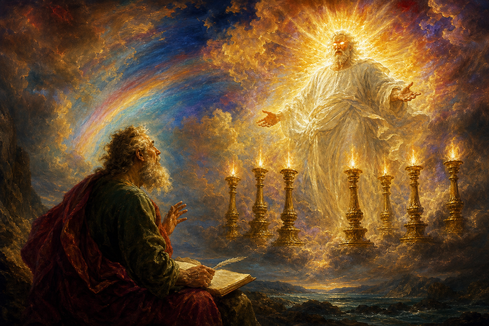

New Testament · Book 27 of 27
Revelation
The curtain pulled back — thunder, lampstands, and a throne that outlasts every empire.
The last word of Scripture is not an ending — it is an unveiling.
An old man on a prison island is handed the final chapter of history, and told to write down everything he sees.
What happens in Revelation
Exiled to the rocky island of Patmos for preaching about Jesus, the apostle John is caught up in a vision that reads like nothing else in Scripture — part letter, part prophecy, part fever-bright apocalypse. It opens gently enough, with Christ walking among seven golden lampstands dictating letters to seven real churches, some praised, some warned. Then the imagery escalates: scrolls sealed seven times, trumpets that shake the sky, a dragon at war with a woman clothed in the sun, beasts rising from sea and earth, and bowls of judgment poured out on a world that has run out of patience with itself. It is strange, symbolic, and was never meant to be read as a straightforward timeline — its first readers were persecuted Christians who needed to know, in code if necessary, that their suffering was not the end of the story.
Why it matters
Beneath the thunder, Revelation is a book of fierce hope: every throne that oppresses God's people is temporary, and the one that matters cannot be shaken. It closes the entire Bible by returning to its opening image — a garden, a tree of life, a people walking with God face to face — proving that the story which began in Genesis was heading toward restoration all along.
Jump to a chapter
Revelation has 22 chapters — select one to begin reading there.